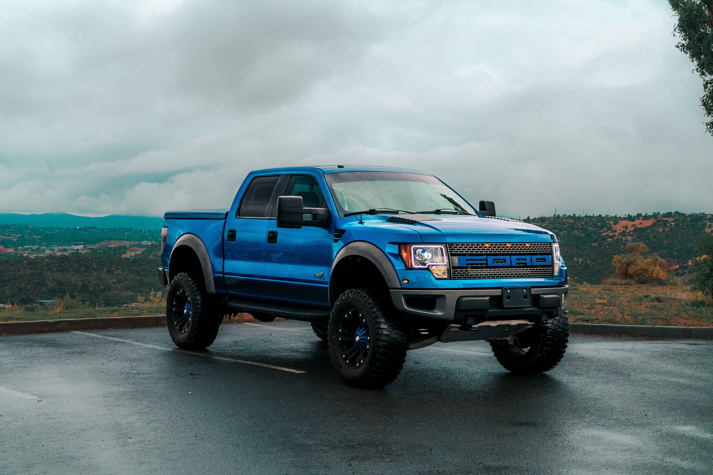

Delivering industry-grade mechanical precision, rapid turnarounds, and trusted engineering to keep your automobile performing at peak efficiency.

YEARS OF EXCELLENCE
CLIENTS SERVED
SATISFACTION RATING
Modern equipment, certified technicians, and authentic components engineered for ultimate driver safety.
Master technicians possessing extensive credentials across light vehicles, trucks, and performance cars.
Advanced digital analysis systems capable of pinpointing complex electronic and powertrain issues instantly.
We source high-grade OEM parts ensuring long-lasting performance and factory warranty integrity.
Comprehensive fluid flushes, oil replacements, and preventative multi-point vehicle checks.
High-precision balancing, tread inspection, puncture restoration, and tire fittings.
3D computer-guided laser alignment ensuring straight tracking and maximum tire lifespan.
Industrial thermal polymer coatings for custom rims, brake calipers, and exposed subframes.
Full brake pad restoration, rotor resurfacing, hydraulic bleeding, and ABS calibration.
Complete timing belt replacements, cylinder head rebuilds, and electrical system diagnostics.
Identify early symptoms before they develop into costly mechanical breakdowns.
High-pitched squealing indicates pad wear sensors reaching critical thresholds. Harsh grinding sounds mean complete friction material exhaustion, damaging the brake discs directly.
A continuous check engine light flags sensor failure, emissions anomalies, or ignition degradation. Flashing check engine lights indicate dangerous active cylinder misfires requiring immediate shutdown.
If your car pulls left or right on level roads, wheel geometry is misaligned or suspension bushings are worn. Unaddressed alignment causes rapid asymmetric tire degradation.
Dark brown or black puddles signal motor oil leaks, neon fluid indicates coolant leaks, reddish fluid signifies transmission hydraulic leaks, and clear odorless liquid is standard A/C condensation.
Vibrations occurring at highway speeds usually point to un-balanced wheels, lost wheel weights, or warped brake rotors if vibrations intensify during deceleration.
Delayed power pickup when stepping on the gas pedal usually points to clogged fuel injectors, dirty air filters, failing mass air flow (MAF) sensors, or worn spark plugs.
Blue smoke indicates burning engine oil, thick white smoke points to coolant leaking into internal combustion chambers, and heavy black smoke signals excess fuel consumption.
If your engine revs high without expected vehicle speed increases, or shifts harshly, transmission fluid levels may be dangerously low or internal clutch plates are worn down.
Deep metallic knocking sounds synced with engine RPM suggest worn rod bearings or severe internal lubrication failure that requires immediate engine inspection to avoid total engine failure.
A sweet chemical smell indicates boiling coolant leaks, acrid burning rubber points to slipping engine belts, and sharp metallic stench suggests sticking brake calipers.
"Auto Fix Repairs diagnosed my drivetrain issues effortlessly. Fair pricing, clear communication, and impeccable turnaround."
"Laser alignment transformed my steering stability completely. The team is dedicated, precise, and highly professional."
"Thorough inspections, completely transparent estimates, and zero hidden charges. My go-to service center."
Synthetic lubricants handle 7,500 to 10,000 miles between replacements. Conventional mineral oils require change intervals closer to 3,000 to 5,000 miles depending on driving conditions.
Frequent causes involve failing alternators incapable of sustaining charge, parasitic electronic loads, harsh climate exposure, or internal chemical degradation beyond 3 to 5 years of operation.
Friction pads usually last between 25,000 and 70,000 miles. We advise comprehensive system assessments every 10,000 miles or immediately upon hearing abnormal noises.
Disengage cabin air conditioning, activate heat fans to draw thermal energy away from the block, pull over safely, and allow complete cooling prior to opening reservoir caps.
We recommend performing laser alignment once every 12 months or every 12,000 miles, as well as immediately after replacing tires or striking major road hazards.
Our checkup covers fluid contamination checks, battery health diagnostics, tire wear analysis, brake pad thickness measurements, steering assembly play, and computer fault code scans.
Inspect the rubber belt for visible micro-cracks, fraying along the edges, glazing, or loud squeaking sounds coming from the front engine pulleys during cold starts.
A spongy pedal usually points to trapped air pockets in your brake fluid lines, moisture contamination reducing fluid boiling points, or master cylinder hydraulic seal wear.
A complete transmission fluid drain, pan filter replacement, and fluid level calibration generally takes between 1.5 to 2 hours in our workshop facility.
Yes, all OEM parts and craftsmanship installed at our center are fully backed by our 12-Month / 12,000-Mile comprehensive workshop warranty coverage.